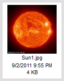
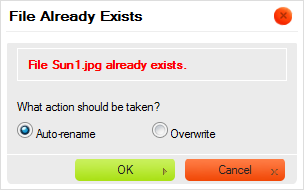

Panel soubor暖 zobrazuje v拧echny soubory dostupn茅 ve vybran茅 slo啪ce.
Panel soubor暖 m暖啪e soubory zobrazovat ve dvou r暖zn媒ch form谩tech zobrazen铆, v z谩vislosti na nastaven铆 CKFinder (viz "Nastaven铆"). N谩sleduj铆c铆 je porovn谩n铆 zobrazen铆 N谩hled a Seznam ve stejn茅 slo啪ce.
P艡i nastaven铆 CKFinder pro pou啪it铆 zobrazen铆 N谩hled (Thumbnails) budou soubory zobrazeny jako n谩hledy (miniatury nebo ikony), s nebo bez dal拧铆ch informac铆 jako n谩zev souboru, velikost, nebo datum (z谩le啪铆 na Va拧铆ch nastaven铆ch).

Kdy啪 nastav铆te CKFinder aby pou啪il zobrazen铆 Seznam (List), soubory budou zobrazeny v seznamu, s nebo bez dal拧铆ch informac铆 jako n谩zev souboru, velikost, nebo datum (z谩le啪铆 na Va拧铆ch nastaven铆ch).

Abyste soubor aktivovali a ud臎lali z n臎j "sou膷asn媒 soubor" v CKFinder, klikn臎te na n谩zev souboru nebo na jeho n谩hled. Aby bylo snaz拧铆 soubor vybrat, p艡i najet铆 my拧铆 nad soubor bude jeho pozad铆 zv媒razn臎no. Jakmile je soubor vybr谩n bude trvale zv媒razn臎n jinou barvou pozad铆.
Obr谩zky n铆啪e zobrazuj铆 r暖zn茅 stavy souboru, jak je zobrazen ve slo啪ce: nevybr谩n, najet铆 my拧铆 a aktivov谩n (vybr谩n).
|  |
 |
 |
Abyste soubor deaktivovali, klikn臎te na jin媒 (膷铆m啪 ho aktivujete) nebo klikn臎te na jak茅koliv pr谩zdn茅 m铆sto uvnit艡 Panelu soubor暖.
Abyste zkop铆rovali soubor do jin茅 slo啪ky, vyberte ho a p艡et谩hn臎te na c铆lovou slo啪ku v Panelu slo啪ek. Kdy啪 ho p艡esunete na n谩zev slo啪ky, zvolte mo啪nost Soubor zkop铆rovat sem (Copy File Here) z kontextov茅ho menu.
Soubor bude duplikov谩n a jeho kopie bude um铆st臎na do c铆lov茅 slo啪ky. Zdrojov谩 slo啪ka z暖stane nedot膷ena.

Pozn谩mka: Pokud soubor se stejn媒m n谩zvem ji啪 v c铆lov茅 slo啪ce existuje, bude V谩m nab铆dnut v媒b臎r mezi p艡episem nebo automatick媒m p艡ejmenov谩n铆m zkop铆rovan茅ho souboru (toto je v媒choz铆 mo啪nost).

Abyste soubor p艡esunuli do jin茅 slo啪ky, zvolte ho a p艡et谩hn臎te do c铆lov茅 slo啪ky v Panelu slo啪ek. Kdy啪 ho p艡et谩hnete na n谩zev slo啪ky, zvolte mo啪nost Soubor p艡esunout sem (Move File Here) z kontextov茅ho menu.

Soubor bude ze zdrojov茅 slo啪ky odstran臎n a vlo啪en do c铆lov茅.

Pokro膷il茅 operace mohou b媒t provedeny na soubor pou啪it铆m jeho Kontextov茅ho menu. V z谩vislosti na okolnostech mohou b媒t dostupn茅 n谩sleduj铆c铆 mo啪nosti:

Pozn谩mka: N臎kter茅 mo啪nosti kontextov茅ho menu mohou b媒t zak谩z谩ny (a proto jsou za拧edl茅), v z谩vislosti na nastaven铆ch CKFinder, kter茅 vy啪aduje V谩拧 spr谩vce syst茅mu.
Abyste vybrali soubor pomoc铆 kontextov茅ho menu, zvolte mo啪nost Vybrat (Select). Jinak m暖啪ete toto tak茅 prov茅st dvojit媒m kliknut铆m na soubor pomoc铆 Va拧铆 my拧i.
V z谩vislosti na prost艡ed铆, kde je CKFinder pou啪it, operace v媒b臎ru m暖啪e, nap艡铆klad, poslat URL souboru do jin茅 aplikace nebo vlo啪it obr谩zek p艡铆mo do 膷l谩nku vytvo艡en茅m ve Va拧em redak膷n铆m syst茅mu.
Abyste si mohli soubor prohl茅dnout v prohl铆啪e膷i, zvolte mo啪nost Zobrazit (View) z jeho kontextov茅ho menu. Ne v拧echny druhy soubor暖 mohou b媒t v prohl铆啪e膷铆ch zobrazeny, ale tato funkce je u啪ite膷n谩 pro obr谩zky, text a soubory PDF. V ostatn铆ch p艡铆padech se V谩s prohl铆啪e膷 zept谩 na vhodnou aplikaci, pomoc铆 kter茅 soubor otev艡铆t.
V z谩vislosti na nastaven铆 Va拧eho prohl铆啪e膷e a opera膷n铆ho syst茅mu, bude soubor zobrazen v nov茅 kart臎 nebo okn臎 prohl铆啪e膷e.
Abyste mohli soubor st谩hnout, zvolte mo啪nost Ulo啪it jako (Download) z jeho kontextov茅ho menu. Prohl铆啪e膷 se V谩s zept谩 na um铆st臎n铆 sta啪en茅ho souboru ve Va拧em po膷铆ta膷i. V z谩vislosti na nastaven铆 Va拧eho prohl铆啪e膷e a opera膷n铆ho syst茅mu m暖啪e b媒t soubor tak茅 otev艡en hned po sta啪en铆 pomoc铆 vhodn茅 aplikace ve Va拧em opera膷n铆m syst茅mu.
Abyste zm臎nili velikost obr谩zku nebo jeho n谩hledu, zvolte mo啪nost Zm臎nit velikost (Resize) z jeho kontextov茅ho menu. Jakmile zad谩te nov茅 rozm臎ry obr谩zku nebo zvol铆te velikost n谩hledu, zav艡ete dialogov茅 okno k pou啪it铆 zm臎n.

Pokud je obr谩zek p艡铆li拧 velk媒, m暖啪ete zm臎nit jeho rozm臎ry zad谩n铆m nov媒ch hodnot do pol铆
艩铆艡ka (Width) a V媒拧ka (Height). Standardn臎 je pom臎r obr谩zku uzam膷en,
co啪 m暖啪ete vid臎t d铆ky tla膷铆tku  (Uzamknout pom臎r). To znamen谩, 啪e kdy啪 zm臎n铆te jednu z hodnot velikosti (拧铆艡ku
膷i v媒拧ku), druh谩 bude automaticky upravena.
(Uzamknout pom臎r). To znamen谩, 啪e kdy啪 zm臎n铆te jednu z hodnot velikosti (拧铆艡ku
膷i v媒拧ku), druh谩 bude automaticky upravena.
Pokud chcete voln臎 upravit oba rozm臎ry, klikn臎te na tla膷铆tko Uzamknout pom臎r, abyste pom臎r odemknuli. Tla膷铆tko se zm臎n铆 na (Odem膷eno) a 煤prava jednoho rozm臎ru nezp暖sob铆 automatickou zm臎nu druh茅ho. Pro znovu uzam膷en铆 pom臎ru, klikn臎te je拧t臎 jednou na tla膷铆tko Odem膷en铆.
Obr谩zek m暖啪ete snadno vr谩tit do p暖vodn铆ho rozm臎ru stisknut铆m tla膷铆tka (P暖vodn铆 velikost). Toto resetuje velikost obr谩zku; p暖vodn铆 拧铆艡ka a v媒拧ka budou nyn铆 zobrazeny v odpov铆daj铆c铆ch r谩me膷c铆ch.
Pokud zm臎n铆te velikost obr谩zku, m暖啪ete se rozhodnout ho ulo啪it pod stejn媒m n谩zvem, 膷铆m啪 existuj铆c铆 p艡ep铆拧ete. Nezapome艌te pros铆m, 啪e tuto operaci nelze vr谩tit a jakmile soubor s jeho zm臎n臎nou velikost铆 ulo啪铆te, j铆啪 ho nebudete moci vr谩tit do p暖vodn铆 velikosti. Abyste p暖vodn铆 obr谩zek p艡epsali, nechte za拧krtnut茅 pol铆膷ko Vytvo艡it nov媒 obr谩zek (Create new image).

M暖啪ete se tak茅 rozhodnout obr谩zek ulo啪it jako nov媒 soubor a zanechat p暖vodn铆 tak jak je. Pokud
vyberete pol铆膷ko Vytvo艡it nov媒 obr谩zek (Create new image), budete moci d谩t zm臎n臎n茅mu souboru
nov媒 n谩zev. Standardn臎 V谩m CKFinder nab铆dne obr谩zek ulo啪it pod n谩zvem, odvozen媒m od p暖vodn铆ho souboru
a rozm臎ry nov茅ho souboru (nap艡铆klad: Sun1_100x100.jpg kdy啪 p暖vodn铆 soubor m臎l n谩zev
Sun1.jpg a velikost souboru byla zm臎n臎na na 100 pixel暖 na 拧铆艡ku i v媒拧ku).

Kdy啪 jste s Va拧imi zm臎nami spokojeni, klikn臎te na tla膷铆tko OK pro zav艡en铆 dialogov茅ho okna. Po 煤sp臎拧n茅 zm臎n臎 velikosti bude zobrazena potvrzovac铆 zpr谩va.

Pokud jste zm臎n臎n媒 obr谩zek ulo啪ili do nov茅ho souboru, uvid铆te oba soubory uvnit艡 slo啪ky.

Pozn谩mka: Velikost p暖vodn铆ho souboru m暖啪e omezit dostupn茅 mo啪nosti pro funkci Zm臎nit velikost. Velikost zm臎n臎n茅ho obr谩zku nem暖啪e p艡ekro膷it p暖vodn铆 rozm臎ry.
Funkce Zm臎nit velikost (Resize) m暖啪e b媒t tak茅 pou啪ita pro vytv谩艡en铆 kop铆 obr谩zku se zm臎n臎nou velkost铆 (n谩hled暖), kter茅 m暖啪ete pou啪铆t v 膷l谩nc铆ch Na Va拧铆 internetov茅 str谩nce nebo v p艡铆sp臎vc铆ch do blogu. D铆ky funkci pro vytv谩艡en铆 n谩hled暖 m暖啪e spr谩vce str谩nky nastavit mo啪nosti p艡edur膷en茅 velikosti n谩hledu, kter谩 m暖啪e b媒t pou啪ita u啪ivateli CKFinder. Toto V谩m u拧et艡铆 膷as ru膷n铆m zad谩v谩n铆m zm臎n臎n媒ch hodnot 拧铆艡ky a v媒拧ky pro ka啪d媒 obr谩zek a t铆mto bude ka啪d谩 velkost n谩hledu na Va拧ich str谩nk谩ch stejn谩.
Abyste mohli pou啪铆t jednu z p艡ednastaven媒ch velikost铆 n谩hledu, zvolte mo啪nost Zm臎nit velikost (Resize)
z kontextov茅ho menu. V 膷谩sti Vytvo艡it nov媒 n谩hled (Create a new thumbnail) dialogov茅ho okna Zm臎nit velikost (Resize)
vyberte za拧krt谩vac铆 pol铆膷ka odpov铆daj铆c铆 po啪adovan茅 velikosti. Po 煤sp臎拧n茅 zm臎n臎 velikosti bude zobrazena potvrzovac铆 zpr谩va.
Kopie obr谩zku se zm臎n臎nou velikost铆 budou vytvo艡eny ve stejn茅 slo啪ce a nov茅 soubory budou pojmenov谩ny
podle mo啪nosti nastaven铆 velikost n谩hledu, kterou zvol铆te (s p艡铆ponami _large,
_medium a _small, kter茅 budou p艡id谩ny k p暖vodn铆mu n谩zvu souboru).

Pozn谩mka: Pokud je obr谩zek men拧铆, ne啪 n臎kter谩 z mo啪nost铆 n谩hled暖 (viz p艡铆klad naho艡e), ty, kter茅 jsou nedostupn茅, budou za拧edl茅.
Abyste p艡ejmenovali soubor, zvolte mo啪nost P艡ejmenovat (Rename) z jeho kontextov茅ho menu nebo pou啪ijte kl谩vesovou zkratku F2. Do dialogov茅ho okna, kter茅 se zobraz铆, zadejte nov媒 n谩zev souboru, 膷铆m啪 p艡ep铆拧ete existuj铆c铆. Jakmile zad谩te nov媒 n谩zev souboru a zav艡ete dialogov茅 okno, soubor bude p艡ejmenov谩n.

Ne v拧echny znaky mohou b媒t pou啪ity v n谩zvech slo啪ek a soubor暖 kv暖li omezen铆m
syst茅m暖, kde je CKFinder spu拧t臎n. Mezi znaky, kter茅 nemohou b媒t pou啪ity v n谩zvech
slo啪ek a soubor暖 jsou: \ / : *
? " < > a |.
Upozorn臎n铆: Kdy啪 slo啪ku p艡ejmenujete, odkazy 膷i vlo啪en铆 m茅di铆 dostupn茅 na jin媒ch str谩nk谩ch a odkazuj铆c铆 na soubor budou po拧kozeny a proto nebudou dostupn茅. Z tohoto d暖vodu bu膹te p艡i pou啪铆v谩n铆 t茅to funkce opatrn铆.
Abyste soubor smazali, zvolte mo啪nost Smazat (Delete) z jeho kontextov茅ho menu nebo pou啪ijte kl谩vesu Del. Bude zobrazena potvrzovac铆 zpr谩va, kter谩 zajist铆, 啪e tuto operaci opravdu chcete prov茅st. Jakmile smaz谩n铆 potvrd铆te, soubor bude odstran臎n.
Upozorn臎n铆: Tuto operaci nelze vr谩tit zp臎t. Jakmile slo啪ku a jej铆 obsah sma啪ete, odstran臎n茅 soubory ji啪 nelze obnovit.
Upozorn臎n铆: Kdy啪 soubor sma啪ete, odkazy 膷i vlo啪en铆 m茅di铆 dostupn茅 na jin媒ch str谩nk谩ch a odkazuj铆c铆 na soubor budou po拧kozeny a proto nebudou dostupn茅. Z tohoto d暖vodu bu膹te p艡i pou啪铆v谩n铆 t茅to funkce opatrn铆.